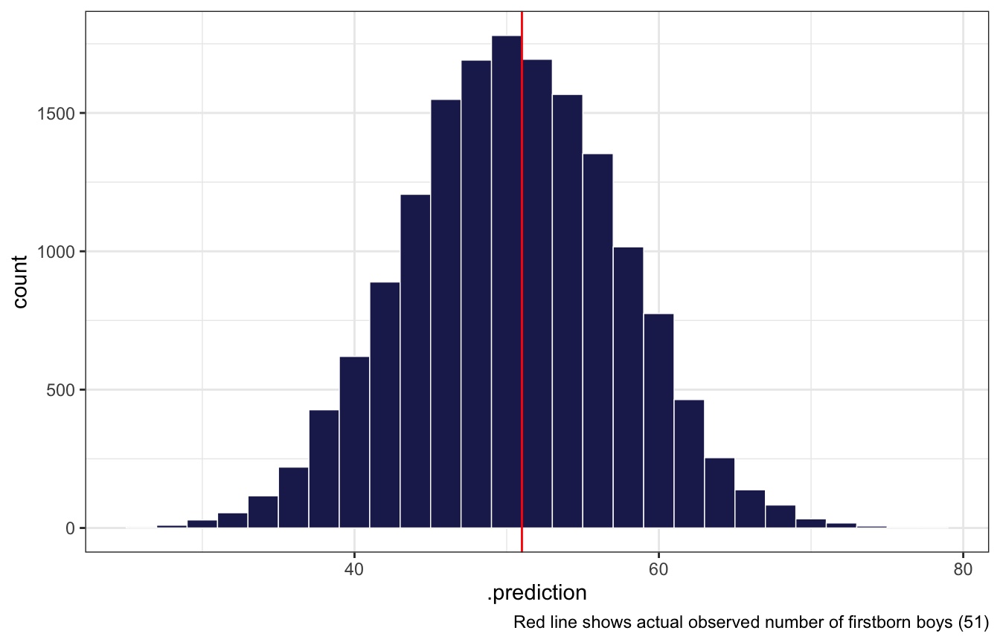
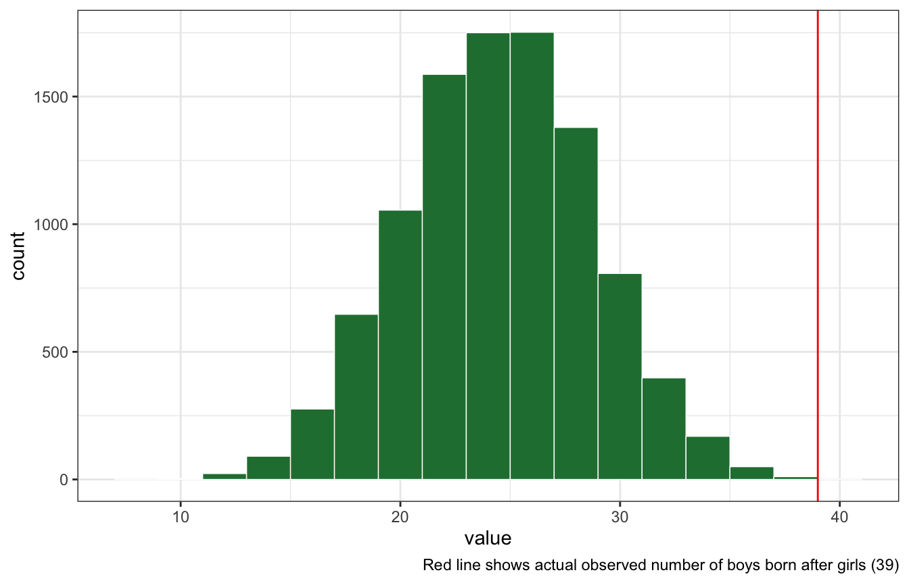

library(tidyverse)
library(brms)
library(tidybayes)
library(ggdist)
library(broom.mixed)
library(glue)
# Plot stuff
clrs <- MetBrewer::met.brewer("Lakota", 6)
theme_set(theme_bw())
# Seed stuff
BAYES_SEED <- 1234
set.seed(1234)Chapter 3 exercises
Posteriors from grids
This births data shows the sex of the first and second children born to 100 different families (1 = boy, 2 = girl). The first family had a boy then a girl, the second had a girl and then a boy, the thrid had no boys, etc.
data(homeworkch3, package = "rethinking")
all_births <- tibble(birth1, birth2)
all_births
## # A tibble: 100 × 2
## birth1 birth2
## <dbl> <dbl>
## 1 1 0
## 2 0 1
## 3 0 0
## 4 0 1
## 5 1 0
## 6 1 1
## 7 0 1
## 8 1 1
## 9 0 0
## 10 1 0
## # … with 90 more rowsIn these exercises we don’t care about birth order, so we’ll pool all the births into one long 200-birth vector:
births <- all_births %>%
pivot_longer(cols = everything(), values_to = "boy")
births
## # A tibble: 200 × 2
## name boy
## <chr> <dbl>
## 1 birth1 1
## 2 birth2 0
## 3 birth1 0
## 4 birth2 1
## 5 birth1 0
## 6 birth2 0
## 7 birth1 0
## 8 birth2 1
## 9 birth1 1
## 10 birth2 0
## # … with 190 more rowsWhat proportion of births were boys?
births_summary <- births %>%
summarize(n_boys = sum(boy),
prop_boys = n_boys / n())
births_summary
## # A tibble: 1 × 2
## n_boys prop_boys
## <dbl> <dbl>
## 1 111 0.555
n_boys <- pull(births_summary, n_boys)
prop_boys <- pull(births_summary, prop_boys)
total_births <- nrow(births)
n_girls <- total_births - n_boys3H1
Using grid approximation, compute the posterior distribution for the probability of being a boy. Assume a uniform prior probability. Which parameter value maximizes the posterior probability?
birth_grid <- tibble(p_grid = seq(0, 1, length.out = 1001),
prior_uniform = 1) %>%
mutate(likelihood = dbinom(n_boys, size = total_births, prob = p_grid)) %>%
mutate(posterior_uniform = (likelihood * prior_uniform) / sum(likelihood * prior_uniform))
birth_grid
## # A tibble: 1,001 × 4
## p_grid prior_uniform likelihood posterior_uniform
## <dbl> <dbl> <dbl> <dbl>
## 1 0 1 0 0
## 2 0.001 1 2.48e-275 4.98e-276
## 3 0.002 1 5.89e-242 1.18e-242
## 4 0.003 1 1.89e-222 3.81e-223
## 5 0.004 1 1.28e-208 2.57e-209
## 6 0.005 1 6.68e-198 1.34e-198
## 7 0.006 1 3.76e-189 7.56e-190
## 8 0.007 1 9.28e-182 1.86e-182
## 9 0.008 1 2.32e-175 4.66e-176
## 10 0.009 1 1.01e-169 2.03e-170
## # … with 991 more rowsbirth_grid %>%
ggplot(aes(x = p_grid, y = posterior_uniform)) +
geom_area(fill = clrs[6])Parameter that maximizes the probability:
birth_grid %>%
filter(posterior_uniform == max(posterior_uniform))
## # A tibble: 1 × 4
## p_grid prior_uniform likelihood posterior_uniform
## <dbl> <dbl> <dbl> <dbl>
## 1 0.555 1 0.0567 0.0114With brms
model_births <- brm(
bf(boy | trials(total_births) ~ 0 + Intercept),
data = list(boy = n_boys, total_births = total_births),
family = binomial(link = "identity"),
prior = prior(beta(1, 1), class = b, lb = 0, ub = 1),
iter = 5000, warmup = 1000, seed = BAYES_SEED, cores = 4
)
## Compiling Stan program...
## Trying to compile a simple C file
## Start samplingmodel_births %>%
gather_draws(b_Intercept) %>%
ggplot(aes(x = .value, y = .variable)) +
stat_halfeye(fill = clrs[6])model_births %>%
gather_draws(b_Intercept) %>%
summarize(median = median(.value))
## # A tibble: 1 × 2
## .variable median
## <chr> <dbl>
## 1 b_Intercept 0.5553H2
Using the
samplefunction, draw 10,000 random parameter values from the posterior distribution you calculated above. Use these samples to estimate the 50%, 89%, and 97% highest posterior density intervals.
birth_samples <- sample(birth_grid$p_grid, prob = birth_grid$posterior_uniform,
size = 10000, replace = TRUE)
tibble(x = birth_samples) %>%
ggplot(aes(x = x)) +
stat_slab(
aes(fill_ramp = stat(level)),
.width = c(0.02, 0.5, 0.89, 0.97, 1),
fill = clrs[3]
) +
scale_fill_ramp_discrete(range = c(0.2, 1), guide = "none")
HDInterval::hdi(birth_samples, credMass = 0.5)
## lower upper
## 0.530 0.577
## attr(,"credMass")
## [1] 0.5
HDInterval::hdi(birth_samples, credMass = 0.89)
## lower upper
## 0.494 0.605
## attr(,"credMass")
## [1] 0.89
HDInterval::hdi(birth_samples, credMass = 0.97)
## lower upper
## 0.473 0.626
## attr(,"credMass")
## [1] 0.97With brms
model_births %>%
spread_draws(b_Intercept) %>%
median_hdci(b_Intercept, .width = c(0.5, 0.89, 0.97))
## # A tibble: 3 × 6
## b_Intercept .lower .upper .width .point .interval
## <dbl> <dbl> <dbl> <dbl> <chr> <chr>
## 1 0.555 0.532 0.578 0.5 median hdci
## 2 0.555 0.501 0.612 0.89 median hdci
## 3 0.555 0.480 0.629 0.97 median hdcimodel_births %>%
tidy_draws() %>%
ggplot(aes(x = b_Intercept)) +
stat_slab(
aes(fill_ramp = stat(level)),
.width = c(0.02, 0.5, 0.89, 0.97, 1),
fill = clrs[3]
) +
scale_fill_ramp_discrete(range = c(0.2, 1), guide = "none")3H3
Use
rbinomto simulate 10,000 replicates of 200 births. You should end up with 10,000 numbers, each one a acount of boyts out of 200 births. Compare the distribution of predicted numbers of boys to the actual count in the data (111 boys out of 200 births). … Does it look like the model fits the data well? That is, does the distribution of predcitions include the actual observation as a central, likely outcome?
Looks good!
# Posterior predictive distribution
posterior_pred_births <- rbinom(10000, size = 200, prob = birth_samples)
posterior_pred_births %>%
enframe() %>%
ggplot(aes(x = value)) +
geom_histogram(binwidth = 2, color = "white", size = 0.25, fill = clrs[1]) +
geom_vline(xintercept = n_boys, color = "red") +
labs(caption = glue("Red line shows actual observed number of boys ({n_boys})"))With brms
model_births %>%
predicted_draws(newdata = tibble(total_births = 200)) %>%
ggplot(aes(x = .prediction)) +
geom_histogram(binwidth = 2, color = "white", size = 0.25, fill = clrs[1]) +
geom_vline(xintercept = n_boys, color = "red") +
labs(caption = glue("Red line shows actual observed number of boys ({n_boys})"))3H4
Now compare 10,000 counts of boys from 100 simulated first borns only to the number of boys in the first births,
birth1. How does the model look in this light?
We need to just look at first births:
n_boys_first <- sum(birth1)
total_births_first <- length(birth1)
birth_grid_first <- tibble(p_grid = seq(0, 1, length.out = 1001),
prior_uniform = 1) %>%
mutate(likelihood = dbinom(n_boys_first, size = total_births_first, prob = p_grid)) %>%
mutate(posterior_uniform = (likelihood * prior_uniform) / sum(likelihood * prior_uniform))
first_samples <- sample(birth_grid_first$p_grid, prob = birth_grid_first$posterior_uniform,
size = 10000, replace = TRUE)
posterior_pred_first <- rbinom(10000, size = 100, prob = first_samples)
posterior_pred_first %>%
enframe() %>%
ggplot(aes(x = value)) +
geom_histogram(binwidth = 2, color = "white", size = 0.25, fill = clrs[6]) +
geom_vline(xintercept = n_boys_first, color = "red") +
labs(caption = glue("Red line shows actual observed number of firstborn boys ({n_boys_first})"))Looks good still!
model_births_first <- brm(
bf(boy | trials(total_births) ~ 0 + Intercept),
data = list(boy = n_boys_first, total_births = total_births_first),
family = binomial(link = "identity"),
prior = prior(beta(1, 1), class = b, lb = 0, ub = 1),
iter = 5000, warmup = 1000, seed = BAYES_SEED, cores = 4
)
## Compiling Stan program...
## recompiling to avoid crashing R session
## Trying to compile a simple C file
## Start samplingWith brms
Looks the same with brms too:
model_births_first %>%
predicted_draws(newdata = tibble(total_births = 100)) %>%
ggplot(aes(x = .prediction)) +
geom_histogram(binwidth = 2, color = "white", size = 0.25, fill = clrs[6]) +
geom_vline(xintercept = n_boys_first, color = "red") +
labs(caption = glue("Red line shows actual observed number of firstborn boys ({n_boys_first})"))
3H5
The model assumes that sex of first and second births are independent. To check this assumption, focus now on second births that followed female first borns. Compare 10,000 simulated conts of boys to only those second births that followed girls. To do this correctly, you need to count the number of first borns who were girls and simulate that many births, 10,000 times. Compare the counts of boys in your simulations to the actual observed count of boys following girls. How does the model look in this light? Any guesses what is going on in these data?
n_girls_first <- length(birth1) - sum(birth1)
n_boys_after_girls <- all_births %>%
filter(birth1 == 0) %>% # All families with a firstborn girl
summarize(boy_after_girl = sum(birth2)) %>%
pull(boy_after_girl)
posterior_pred_first_girl <- rbinom(10000, size = n_girls_first, prob = first_samples)
posterior_pred_first_girl %>%
enframe() %>%
ggplot(aes(x = value)) +
geom_histogram(binwidth = 2, color = "white", size = 0.25, fill = clrs[5]) +
geom_vline(xintercept = n_boys_after_girls, color = "red") +
labs(caption = glue("Red line shows actual observed number of boys born after girls ({n_boys_after_girls})"))
With brms
model_births_first_girls <- brm(
bf(girl | trials(total_births) ~ 0 + Intercept),
data = list(girl = n_girls_first, total_births = total_births_first),
family = binomial(link = "identity"),
prior = prior(beta(1, 1), class = b, lb = 0, ub = 1),
iter = 5000, warmup = 1000, seed = BAYES_SEED, cores = 4
)
## Compiling Stan program...
## recompiling to avoid crashing R session
## Trying to compile a simple C file
## Start samplingmodel_births_first_girls %>%
predicted_draws(newdata = tibble(total_births = n_girls_first)) %>%
ggplot(aes(x = .prediction)) +
geom_histogram(binwidth = 2, color = "white", size = 0.25, fill = clrs[5]) +
geom_vline(xintercept = n_boys_after_girls, color = "red") +
labs(caption = glue("Red line shows actual observed number of boys born after girls ({n_boys_after_girls})"))